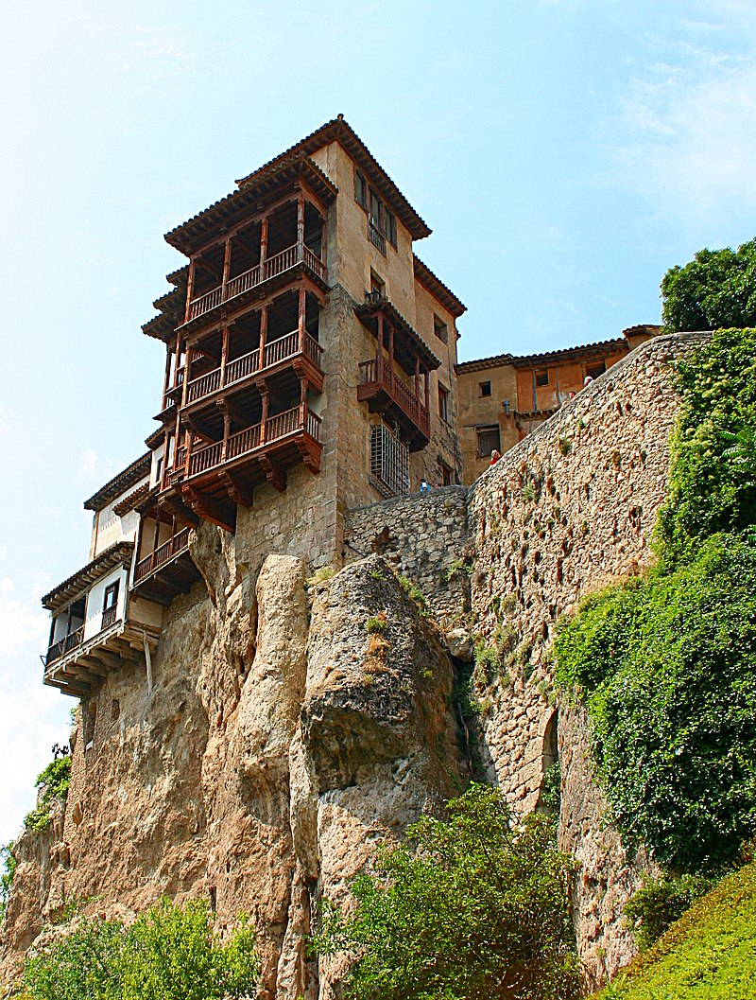

Alzada en limpia sinrazón altiva
–pedestal de crepúsculos soñados–,
¿subes orgullos? ¿Bajas derrocados
sueños de un dios en celestial deriva?
¡Oh, tantálico esfuerzo en piedra viva!
¡Oh, aventura de cielos despeñados!
Cuenca, en volandas de celestes prados,
de peldaño en peldaño fugitiva.
Gallarda entraña de cristal que azores
en piedra guardan, mientras plisa el viento
de tu chopo el audaz escalofrío.
¡Cuenca, cristalizada en mis amores!
Hilván dorado al aire del lamento.
Cuenca, cierta y soñada, en cielo y río.
Este soneto pertenece a
Federico Muelas
Cuenca abstracta, pura, de color de plata, de gentiles piedras, hecha de hallazgos y de olvidos -como el mismo amor-, cubista y medieval, elegante, desgarrada, fiera, tiernísima como una loba parida, colgada y abierta; Cuenca, luniosa, alada, airada, serena y enloquecida, infinta, igual, obsesionante, hidalga; vieja Cuenca.
Este soneto pertenece a Camilo Jose Cela
| Horario | |||||
|---|---|---|---|---|---|
| Lunes | Martes | Miércoles | Jueves | Viernes | |
| 8:30-9:25 | DWEC | EIE | DAW | DAW | DWEC |
| 9:25-10:20 | DWES | DAW | DAW | DWEC | |
| 10:20-11:15 | DIW | DWEC | DIW | ||
| 11:15-11:45 | RECREO | ||||
| 11:45-12:40 | DIW | DWES | DWEC | DIW | EIE |
| 12:40-13:35 | DWES | DAW | DWES | DWES | DIW |
| 13:35-14:30 | |||||